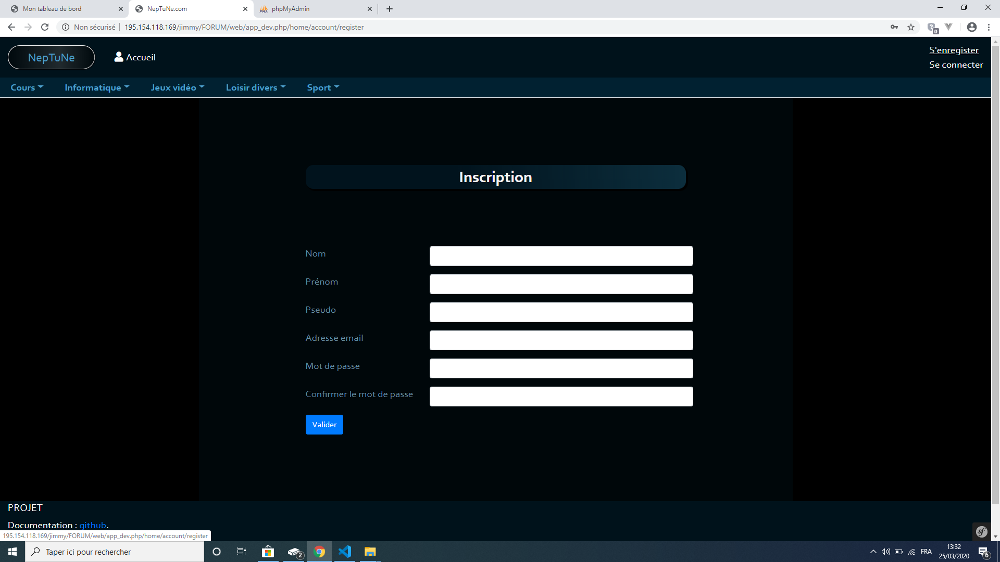
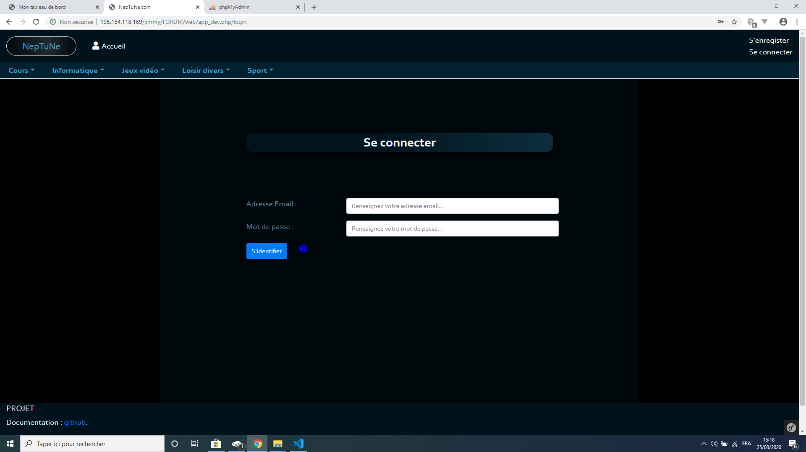

Premiers pas¶
Création du compte¶
Remplir tous les champs demandés sur la page de création du compte :
Une fois les champs renseignés, un email vous sera envoyé sur l’email que vous avez renseigné(e) afin d’activer votre compte.
Connexion¶
Dès que votre compte sera activé vous aurez la possibilité de vous connecter sur le site. Saisissez vos identifiants de connexion et cliquez sur le bouton “s’identifier”.
Note
Le point d’interrogation présent sur la page de connexion vous aidera à modifier votre mot de passe en cas d’oubli.
Lors de la modification du mot de passe, vous devrez renseigner votre adresse email associée à votre compte utilisateur. Un email vous sera alors envoyé pour recevoir un nouveau mot de passe.